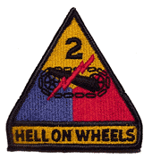

2nd AD Soldiers Never Die.

They're just back with their old division!
Obituaries by last name listed
below...
Allendorf, Dr. George P. Jr.
Dr. George P. Allendorf, Jr., 64, a retired executive and former Army tank
commander, who had lived in Billerica for 32 years, died Friday morning, May 7,
after battling an illness. He was the husband of Elizabeth (Fuoco) Allendorf.
He was born in Hyde Park on Nov. 1, 1939, a son of the late George and Gertrude
Allendorf.
In his youth, he performed with The Crusaders Drum and Bugle Corp. in Boston. He
graduated from Boston College High School in West Roxbury in 1957 and received
his bachelor's degree from Boston College in 1961. He earned his master's degree
from Holy Cross College in 1965 and his doctorate in physical chemistry from
Worcester Polytechnic Institute in 1970.
Dr. Allendorf was a captain in the U.S. Army and was a tank commander in the 2nd
Armored Division during peace time.
He was a retired vice president of M/A-Com in Burlington. He also was a college
professor at Mass Bay Community College and was a substitute school teacher.
He was a member of the Billerica Country Club and the Billerica Lodge of Elks.
An avid Boston sports fan, he enjoyed watching the Red Sox, Bruins and Patriots
games.
Family members fondly recalled his playing of the ukulele and his skill at
manning the grill for weekly family cookouts.
Besides his wife, he is survived by three sons, George Allendorf III and his
wife, Debbie, of Sutton, Rob Allendorf and his wife, Terry, of Billerica, and
Ric Allendorf and wife, Cheryl Hughes, of Middleboro; a daughter, Lisa and her
husband, Christopher Phinney, of Park City, Utah.
He also leaves two brothers, Rich Allendorf and his wife, Sheila, and Joe
Allendorf and wife, Marita, of Louisville, Ky.; a sister and her husband, Mary
and Seth Burns of Boston; six grandchildren, Jessica, Matthew, Deborah,
Benjamin, Meghan and Chloe; his nieces, Rebecca, Priscilla and Tamara Allendorf;
also other nephews, nieces, cousins and friends.
Alexander, Dr. Louis Edward
Click
Here to View Notice
Bird, Richard J.
I have just been informed by the widow of Richard J. Bird of Wadsworth,
Ohio, that Mr. Bird passed away on 16 July 2004. He was buried on Monday
19 July 2004.
Mr. Bird served with my father during WW-II as a tank driver in Company I,
67th Armored Regiment, Second Armored Division. He joined the unit
shortly after the Normandy invasion and fought in the Ardennes and other later
battles.
Mr. Bird remained in Germany for occupation duty at the close of the war.
He is survived by his wife Mary Bird, of Wadsworth, Ohio and three daughters.
Posted by... Dave Brannon
Boyd,
Eugene Russell
Passed
away 12/24/97-Born in Troup, Texas-Beloved husband to Ms. Edna Boyd for 50
years. He was one of the most
amazing men anyone could ever meet-he never knew a stranger. Self made man
who started his own fencing business in Terrell, TX where he and his family
resided until his passing. He was a beloved father and grandfather of
5 children and 9 grandchildren. We miss the sparkle in his eyes, the
strength in his hands, and the love in his heart.
Rest in Peace Daddy and "Papa", we are so proud of your bravery
and your life. We know that when we get to Heaven, yours will be the first
hand we seek to meet us there...With much love and adoration-your loving
family-We miss you so very much.
Posted by... Shannon
J. Whitley AKA "Shanny"
Medal of Honor Recipient
James Burt
Passed Away February 15, 2006

Captain James Montross Burt, USA,
(Ret.), who received the Medal of Honor for his heroism in World War II, died
on February 15, 2006 in Wyomissing, PA, at the age of 88.
A graduate of the Norwich University in Northfield Vermont, Class of
1939, Captain Burt was Norwich's last living Medal of Honor recipient.
Burt interrupted his civilian
career in 1941 to enter active military duty, serving as a tank commander with
the 66th Armored Regiment (Burt's Knights) of the 2nd Armored Division (Hell
on Wheels) in North Africa, Sicily, and the long march from Normandy to
Berlin.
A veteran of seven military
campaigns and two invasions during World War II, he was awarded the Medal of
Honor by President Harry S Truman for extraordinary heroism under heavy fire
during the allied attack on the fortified city of Aachen, Germany.
Over ten days in October 1944 on the eastern outskirts of Wurselen,
Germany, through miserable weather conditions and under constant heavy
shelling, Captain Burt held the combined forces of tank and infantry together
through the German counterattack, despite suffering wounds to the face, neck,
and abdomen. His heroic actions
during the fierce assault helped to secure the closing of the Aachen gap, a
key strategic foothold needed for the further advancement of the Allied Forces
deeper into Germany. In addition
to the Medal of Honor, Captain Burt's extreme valor earned him the Purple
Heart with two Oak Leaf Clusters.
After the war Burt worked as a paper
industry executive and also taught as a college instructor for eleven years.
He and his wife Edyth had four children and three step-children. His death
leaves only 116 living Medal of Honor recipients among us, fewer than at any
time in our Nation's history.
Darnell, George T
He was my Grandfather. He passed away at the age of 84 from complications
of cancer. He served with Hell on Wheels from 1941-1945 as a truck
driver that hauled fuel to the tanks, He was a member of the 71st AFA Bn.
Posted by... Angela Fly
Gallagher, Gerry
GALLAGHER- Gerry, 85, of New Paltz, died May 2,
2004. He was born on March 1, 1919 in Jersey City, NJ and wintered in Florida
since the mid 1980s while maintaining a residence in New Paltz, NY. Gerry
was a DAV and a member of the VFW and The American Legion, having served in
World War II in the well known armored division- "Hell on Wheels". Survivors
include nephew Brian Gurl (from Venice, FL), as well as Chris Gurl, Robert Gurl,
Bernard Gallagher and niece Linda Lee Sindt. Gerry is remembered by family and
friends as a warm, amiable, witty, multi-faceted gentleman with an extraordinary
range of scholarly interests including music, art, philosophy, history, geology,
anthropology and creative expression in any form. He taught art in Ulster
County, NY and maintained a keen interest in painting, drawing, mosaics,
gemology, numismatics, watchmaking, stamps, baseball and a wide variety of
unique collectables. We thank you, Gerry, for your friendship, your genuine
interest in our lives, your incredible memory, your independent spirit, your
unrelenting determination, and for providing us with a rich array of
unforgettable stories to tell and memories to cherish. Youre free! Gerry
will be buried at Arlington National Cemetery. Donations would
be gladly accepted to "Disabled Veterans of America". Cards and notes
can be sent to Linda Sindt, 24 Leonardo Rd., Stone Ridge, NY 12484. Posted by...
Kingston Freeman
Garner, Paul L.
Paul L. Garner passed away on January 26, 1997.
Born November 4, 1917, Paul grew up in Memphis, Tennessee, one of 9 brothers and
sisters raised by his widowed mother, Alba Fletcher Garner. Paul enlisted
in the U. S. Army in 1941. He and 4 brothers served overseas in WWII and
all returned. He married Alice Watson on December 8, 1946, and his only
child, Michael Edward, was born November 3, 1948. Paul owned and operated
Quality Food Center in Marvell, Arkansas, until his retirement in 1984.
Glass Jr., Hubert
Tech 4 grade passed away Nov.3 2002, at age 94. He was attach to the 66th
armored. Morrocco. Africa 1942. Algiers, Sicily. Normandy, Arden, Rhineland. 7
bronze stars. Was inducted in the first draft of 1941,took his training at Fort
Benning, GA discharged Oct 1941 on account of age 35 an older released. Called
back on Dec,7 1941 to fort Benning, GA discharged Sept 5 1945.
Posted by George J Glass Sr. Brother of deceased Hubert Glass Jr.
Harris, Marion L.
Sgt. Marion L. Harris (1920-2005) HQ CO 17th Armored Engineers Served from
October 11, 1940 to July 1945. He passed away in his sleep on May 30, 2005 in
Grenada, Mississippi. He is survived by his wife, Evelyn.
Mitchell, Robert Dee
My father, Robert Dee Mitchell, served in World War II in the 2nd Armored
Division. He was an APC and went in on D-Day plus six. He also was in charge of
300 prisoners of war in Italy at one time. He was 90 years old when he passed
away on August l6, 2004 in Santa Clara, CA. He was born in l913 in Texas and
joined the service there. He requested to be cremated and his ashes buried in a
national cemetery which will take place shortly. I don't know if any of his
buddies are still living, but I would like them to know how proud he was to
serve with them.
Sincerely,
Gloria Mitchell Young
Santa Clara, CA
Mynatt, Kenneth M.
November 6, 1917- July 26, 2004
Member of 2nd Armored Division, 67th AIR 3rd battalion Co. H. Tank Driver:
Medium Tank
Served in ETO: Campaigns; Belgium, Holland and Germany
He died peacefullyon a Sunday night at 10:10 pm with his son Kenneth by
his side.
Seyer, William
William Seyer, age 86 (January 3, 1914 – November 24, 2000). Mr. Seyer was
the 10 in a family of 12 children and grew up in the southeast Missouri area
during the depression. He entered the U.S. army on December 4, 1941 and served
in Co E, 66th Armored Regiment of the 2nd Armored Division “Hell on Wheels”
until October 1945. Mr. Seyer served in North Africa, Sicily, the Ardennes, and
Europe. He landed on the Beaches of Normandy on June 9, 1944 and was in the
Battle of the Bulge and fought in the Ardennes forest in deep snow. His unit
went all the way into Berlin. He celebrated his 50th wedding anniversary with
his wife, Camilla Georger Seyer, who preceded him in death. Mr. Seyer was a
retired farmer and was survived by four daughters. Mr. Seyer kept his “Hell on
Wheels” 2nd armored dvision patch and an old box of K-rations to remind his
family of the sacrifices made by veterans of his unit, as well as to remind them
of the cost of freedom. Mr. Seyer is buried at St. Augustine Catholic Cemetery
in Kelso Missouri.
Tatasciore
, Martin“Tootsie
1923 - 2004
After
a courageous fight for life at the Veteran’s Administration Hospital in
Gainesville, FL., Martin A. Tatasciore, peacefully and quietly returned home to
the Lord on April 21, 2004.
“Tootsie”
was a devout husband, proud father and beloved grandfather. In February, he
became a Great-grandfather. “Pop Pop” cherished every moment spent with his
family. He and his wife Violet, lovingly celebrated 54 years of marriage last
May.
Passed down by
generations before him, and in keeping with his Italian heritage, Martin was an
avid gardener, blessed with a “green thumb’. His yard in Spring Bloom was
featured twice in the Daily Times, and his garden tomatoes were savored by many.
A traditionalist wine maker, he’d travel every October to the Italian
market in Philadelphia to select grapes for making his beautiful wines.
Last,
but definitely not least, Marty loved to play golf and for most of his life
found “heaven on earth” on the fairways.
A
proud World War II veteran of The 2nd Armored Division (“Hell on Wheels”),
17th Combat Armored Engineer Battalion, Company A, he served his
country valiantly under General George Patton as a light machine gunner, most
notably in the Normandy Invasion, Battle of the Bulge in the Ardennes, Northern
France, the Rhineland and Central Europe. His awards include Good Conduct Medal,
Distinguished Unit Badge, European African Middle Eastern Campaign Medal with
five Bronze Stars, WWII Victory Medal, The Belgian Fourragere, and The French
Croix de Guerre. Throughout the European campaigns, he remained devoutly
Catholic, always keeping a rosary and finding comfort in the Blessed
Mother.
A
lifelong resident of Eddystone, PA, Tootsie was a member of Eddystone Council
for 14 years. He was employed by Congoleum-Nairn as a pipe fitter until his
retirement in 1985.
Survivors
include his Wife, Violet, Daughters and Sons in law, Karen and Ted Singleton,
Maureen and Paul Lyons, Mary and Tom Phillips, and Son and Daughter in law,
Martin and Despo Tatasciore. Grandchildren, Tara, Dessie, and Josephine
Tatasciore, Gina and Gelsey Singleton, T.J. and Megan Phillips. Great grandson,
Joseph Martin Chambers. Sisters, Sue Prettyman and Anne Boylan. Pre-deceased by
Brother, Anthony Tatasciore and Sister, Louise Bush.
Martin
will be laid to rest with full military honors at Sts. Peter and Paul Cemetery
following a funeral Mass at St. Rose of Lima Catholic Church, 1901 Chester Pike,
Eddystone, PA 19022-1395, on Wednesday, April 28, 2004 at 10:00 am. Visitation
at White-Luttrell Funeral Home 311 Swarthmore Ave, Ridley Park, PA, Tuesday
April 27th 7:00pm – 9:00pm, and Wednesday April 28th
8:30am – 9:15am.
Memorial
gifts to St. Rose of Lima Catholic Church would be appreciated.
White, Jefferson
"Jeff" Jr.
Jefferson
"Jeff" White Jr., 80, died Sunday, March 14, 2004. He is survived by
his wife of 32 years, Rosemary K. White. A memorial service will be at 3 p.m.
EST at the Lafayette Presbyterian Church in Tallahassee . Burial will be later
at Sycamore Cemetery in Greensboro. Family will receive friends after the
service in the fellowship hall. Culley's MeadowWood Funeral Home, Riggins Road
Chapel (877-8191) is handling arrangements. In lieu of flowers, memorial
contributions may be made to Big Bend Hospice, 1723 Mahan Center Blvd.,
Tallahassee, FL 32308, or the Building Fund at Lafayette Presbyterian Church,
4220 Mahan Drive, Tallahassee, FL 32308. Mr. White, better known as just
"Jeff White" retired from the U.S. Postal Service after 30 years of
service. He started as a mail carrier and retired as supervisor of Tort. He was
a veteran of World War II and served in the U.S. Army Second Armored Division,
82nd RCN Battalion. He was in three major invasions, Africa, Sicily and Normandy
and fought in seven major battles including the Battle of the Bulge. He received
the Silver Star, Purple Heart, the Belgium Fourragere and many other combat
metals. He was very seriously wounded on April 1, 1945, in Germany. After
retirement, Jeff and his wife planned and hosted reunions for the 82nd RCN for
nine years. Jeff said one of the most wonderful things about retirement has been
looking up veterans he has served with and getting to know them again. He also
was on the Ollie North War Stories in the episode "Desert War." Jeff
returned to Belgium in 1997 to visit and was honored in the towns his unit had
liberated. He was a member of Lafayette Presbyterian Church and when it was new
in the '50s and '60s he served as a Deacon and then an Elder. He had very strong
feelings about what the Bible teaches and was never afraid to stand up for his
beliefs. He loved children and those in the Piney Z Community were very special
to him. They really miss him coming by everyday with Oreo cookies. They loved
him dearly. He also had many, many friends, young and old here in Tallahassee.
Other survivors include two sons, James J. White (and wife Suzy) of Greensboro
and Thomas Irvine White of Colorado; a daughter, Carolynne Whitefeather of
Utica, N.Y.; three stepchildren, Margaret Hancock (and husband Keith), Jo Ann
Lassiter of Orlando and Bill Keen of Hawaii; four grandchildren, Andrea Duval
(and husband Craig) of Tallahassee, Tommy White of Greensboro and Nickey White
and Joey White, both of Denver; and six stepgrandchildren, Jim Hancock of
Tallahassee; Jill Lassiter and Jordan Dickens of Orlando, Wil Keen of Knob
Noster, Mo., and John and Annie Keen, both of Hawaii.
Published in the Tallahassee Democrat on 3/15/2004.
Joseph M. Doyle Jr.
of 300 East Washington
Street, North Attleboro, MA, Passed
away last week at the age of 81 from cancer. He
was a member of the 2nd armored 17th engineer battalion
company A. He
leaves his wife Jeannette Doyle and Son and Daughter Edward Doyle and Sandra
Goodknight and 5 grandchildren.
Lloyd R. Conn
Age 84, of Fairmont WV died Oct. 4, 2004. He was born March
22, 1920, in Preston County, WV. Lloyd proudly served his country in United
States Army during World War II for four years, serving with the 2nd Armored
Division. His foreign service campaigns included service in Africa, Europe and
the Battle of the Bulge. His 2nd Armored Division was among the first to enter
Berlin. Following his service to his country he worked for the Morgantown
Ordinance Works and then construction. In 1949 he married his sweet heart Ada
Caroline Larew. He is survived by his wife Ada, his son and daughter-in-law
Dwight and Donna, three grandchildren Andrew, Brian, and Jennifer, and two
great-grandchildren Audia and Hailee. He proceeded in death by both parents, one
son Roger, and two sisters Edna and Opal.